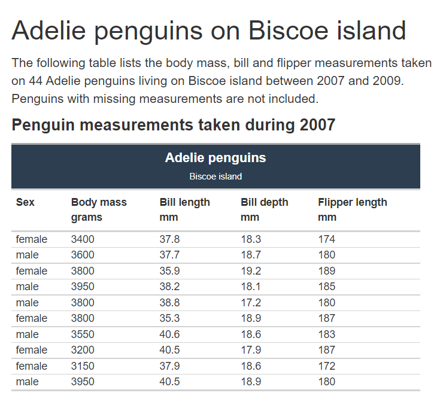

vignettes/create_multiple_reports_sections_notes.Rmd
create_multiple_reports_sections_notes.RmdThis document goes through the R Markdown scripts used create multiple reports containing mulitple sections, by splitting and outputting data both within a single report and across multiple reports. The use of child documents within a report is further described in section 16.4 of Yihui Xie et al. R Markdown Cookbook.
This example generates a report for each penguin species’ measurements, taken at each of their locations, with the measurements split by individual year within each report. The penguin measurements are taken from the palmerpenguins package’s penguin dataset.
Creating the reports requires two R Markdown scripts. The first R Markdown, extracts the unique list of parameters required to create each report, which in this example are the unique species and location names. These parameters are passed onto the second R Markdown script which then creates the report, splitting the report into child templates that produce each of the sections within the report. In the example this produces a table of penguin measurements for each year.

Example table of penguin measurements, one of the yearly tables within a one of the penguin species on a particular island reports.
This script is the one to run, iteratively passing the parameters into the second parameterized R Markdown script.
This creates the directory to save the reports, in this example a reports folder is created in the temporary directory.
dir_create(path(tempdir(), "reports"))This function takes the penguin details and passes them onto the rmarkdown::render function to be used in the second parameterized R Markdown script. The function is wrapped by the purrr::safely function so that a report generating an error is skipped rather than stopping the code running through the later iterations.
#' @Title
#' Run report
#'
#' @description
#' Function to pass the penguin details as parameters into the second parameterized
#' R Markdown report.
#'
#' @param ... three-dots used pass the penguin details as arguments based columns
#' in a data frame. In this example the arguments are the penguin species and
#' island name.
#'
#' @return passes the penguin species and island name to the second parameterized report.
run_report <- function(...) {
penguin_details <- list(...)
rmarkdown::render(input = "penguin_measurements_report.Rmd",
output_file = str_glue("{pluck(penguin_details, 'species')}_{pluck(penguin_details, 'island')}.html"),
output_dir = path(tempdir(), "reports"),
params = list(
species_name = pluck(penguin_details, "species"),
island_name = pluck(penguin_details, "island"))
)
}
safe_run_report <- safely(run_report)Penguins details passed in as parameters using the params section with NA_character_ as the default.
---
output: html_document
params:
species_name: NA_character_
island_name: NA_character_
---
knitr::opts_chunk$set(echo = FALSE)Penguins details taken from palmerpenguins’ penguin dataset filtered on species and island name.
# Assign parameterized values
species_name <- params$species_name
island_name <- params$island_name
# Filter on parameterized values
penguin_data <- penguins %>%
filter(species == species_name, island == island_name) %>%
select(year, sex, body_mass_g, contains("mm")) %>%
drop_na()
# Get years
year_value <- penguin_data %>%
distinct(year) %>%
pull()Report text dynamically including the penguin’s report species and island name, along with the year range over which the measurements were collected for this particular penguin species on a particular island.
## `r species_name` penguins on `r island_name` island
The following table lists the body mass, bill and flipper measurements
taken<br/> on `r nrow(penguin_data)` `r species_name` penguins living on
`r island_name` island between `r min(pull(penguin_data, year))` and
`r max(pull(penguin_data, year))`.<br/> Penguins with missing
measurements are not included.Report’s table template within a table_measurements function.
#' @title
#' Table of penguin measurements
#'
#' @description
#' Table template of penguin measurements for a penguin species on one of the
#' islands.
#'
#' @param data A tibble containing the penguin species name, island name and
#' measurements.
#'
#' @return A gt object containing the table of penguin measurements for a
#' particular penguin species on a particular island.
table_measurements <- function(data){
data %>%
gt() %>%
tab_header(title = md(str_glue("**{species_name} penguins**")),
subtitle = str_glue("{island_name} island")) %>%
cols_label(
sex = html("Sex<br/><br/>"),
body_mass_g = html("Body mass<br/>grams"),
bill_length_mm = html("Bill length<br/>mm"),
bill_depth_mm = html("Bill depth<br/>mm"),
flipper_length_mm = html("Flipper length<br/>mm"),
) %>%
cols_align(
align = "left",
columns = everything()
) %>%
tab_options(
heading.background.color = "#2C3E50",
column_labels.font.weight = "bold",
table.align = "left",
table.width = pct(50),
table.font.size = "smaller",
data_row.padding = px(0)
)
}Dynamically create a R Markdown code chunk to call the table measurements function, creating a table of penguin measurements for a particular year. The R Markdown chunk is created dynamically using the knitr::knit_child function.
#' @title
#' Table of yearly penguin measurements
#'
#' @description
#' Table template of penguin measurements for a penguin species on one of the
#' islands, over a particular year.
#'
#' @seealso
#' https://bookdown.org/yihui/rmarkdown-cookbook/child-document.html
#'
#' @param year_value The particular year as an integer for the penguin measurement.
#'
#' @return A knitr chunk containing the R Markdown to create the penguin
#' measurements table for a particular year.
table_measurements_year <- function(year_value) {
knitr::knit_child(text = c(
'#### **Penguin measurements taken during `r year_value`**',
'',
'```{r}',
'penguin_data_year <- penguin_data %>%',
' filter(year == year_value) %>%',
' select(-year)',
'',
'penguin_data_year %>% ',
' table_measurements()',
'```',
'<br/>',
''
), envir = environment(), quiet = TRUE)
}